← 返回阅读库 · 原论文目录
论文讲解阅读文档 · 表征学习 · v185
Unsupervised Learning of Object Keypoints for Perception and Control
视频时长 00:11:16；讲解文字 4,792 字符；提取讲解画面 25 张。按视频原顺序阅读，每段文字保留时间戳。
文字来自整段视频的自动语音转写，按自然停顿分段，并与 PPT / 论文页面 / 演示画面对齐。未将讲解压缩为摘要；术语、数字和口述公式请结合画面及原论文核对。 阅读稿已校正规范部分明确术语误识别；原始逐字稿和每处修改记录另行保留。
讲解画面为源视频截图（640×360），不是可编辑 PPT 文件。全片按每秒 2 帧扫描内容变化，逐步展开页保留；连续动画保留代表画面。清晰度受源视频限制。
下载完整资料包 · 含离线 HTML、PDF、Word、全部 PPT 画面和字幕。
原论文与材料
Unsupervised Learning of Object Keypoints for Perception and Control · 下载完整 PDF（22 页）
按时间阅读
00:00:00–00:00:20 · 画面 001
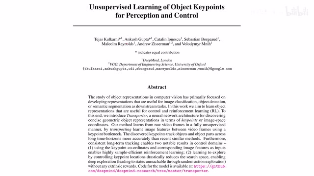
00:00:00–00:00:20 · 画面 001大家好,今天我们来快速说一篇论文 Unsupervised Learning of Object Keypoints for Perception and Control 那么这篇论文是通过有一个专门的网络帮我们提这个 keypoints 的方式来辅助我们的 reinforcement learning 让一切变得更加有效率,同时更加有鲁棒性那么在今天的视频中我们会首先介绍一下本文的 intuition 然后是本文核心的贡献,这个 feature transport
00:00:20–00:00:37 · 画面 002
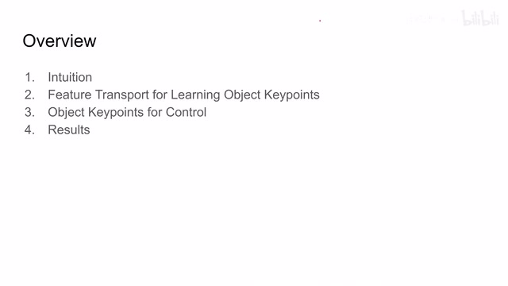
00:00:20–00:00:37 · 画面 002那么再之后呢是根据这个 key points 我们如何做这个 reinforcement learning 还有这个 exploration 最后呢就是作者汇报的一些结果那么首先来看为什么我们要在这个 reinforcement learning 的任务中提这个 key points 那么你比如说以这个 Pong 这个场合为例那么我们非常关注这个小子子弹从一边到另一边它的运动轨迹
00:00:37–00:01:48 · 画面 003
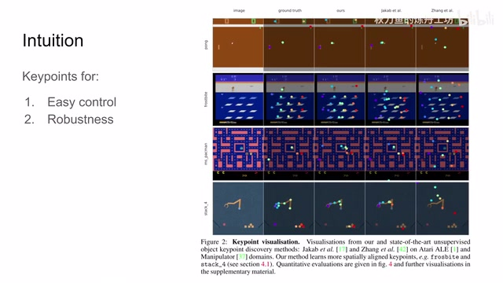
00:00:37–00:01:48 · 画面 003所以如果我们能够让我们的网络显示的去跟踪它的位置那么它对我们后续的控制任务肯定是大有帮助的那么同样像我们的 Stack 这个任务我们要把小的一个箱子给它挪起来那么也是如果我们能够知道每个箱子它的具体的位置还有我们的机械手它各个关节的位置那么这样子对我们的控制肯定更有帮助与此同时我们注意到我们的 Policy Network它呢一般都是三五层这个 convolution 然后加上 mlp 它不会很深那么假如说你把这个地方的背景换一换可能我们的这个网络呢就有点迷糊了对吧它从来也没见过这个但是呢如果我们设计了专门的网络用来稳定的提取这些关键的这些 key points 那么这样子呢它就有一定的无妄性来应对我们的环境的这个改变那么下面我们就来看作者是怎么样稳定的提出这些 key points 吧
00:01:48–00:02:22 · 画面 004
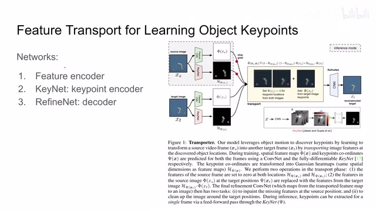
00:01:48–00:02:22 · 画面 004这里我们看到作者设计的这样一个网络的结构它主要包含三个部分第一个是这个 feature encoder 就是这个图像进来提成一个 feature 一个 tensor 这个没什么好说的那么第二个是这个 keynet 它的作用就是把我们的这个图像中的这些关键的点给它提出来那么这里是一个可视化的形式其实它的这个 keynet 它的输出是这个所有的特征点的这个二维的坐标那么第三个呢是这个 RefineNet 我们这里有一个 decoder 还为什么要设计它呢我们接下来马上就要看到那么有了这样一个网络的结构之后呢我们这里要做什么任务呢这里作者说呢我们呢做一个缝合做一个重建这样任务然后呢通过这个重建的这个 loss 呢来训练我们的以上的三个网络
00:02:22–00:03:25 · 画面 005
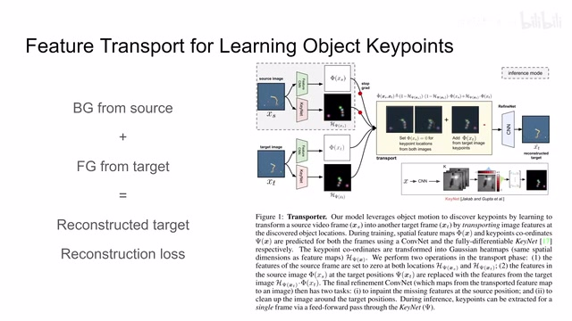
00:02:22–00:03:25 · 画面 005那具体来说这是怎么回事呢我们看到我们在每次训练的时候呢取这个 source image 还有这个 target image 这样一对这个图像它们呢是在一个相同的背景下但是呢控制的状态是不一样的你可以看到它们两个的这个机械臂的位置也不一样这个箱子的这个位置呢也不一样那么这里呢作者的想法是呢就是我如果在这个 source image 上我能够把它的背景给它提出来而在 target image 上我把它的前景提出来这里背景前景就是我们的机械臂箱子还有区别于它的背景蓝色的背景那么在提出来之后我把这两项相结合那么经过一个 refine 对吧它显然应该是长得像我们 target image 因为我们所有的关键跟控制重要的信息全部是 target image 在提供的那么这样子我们对比一下两个图像 mse
00:03:25–00:03:26 · 画面 006
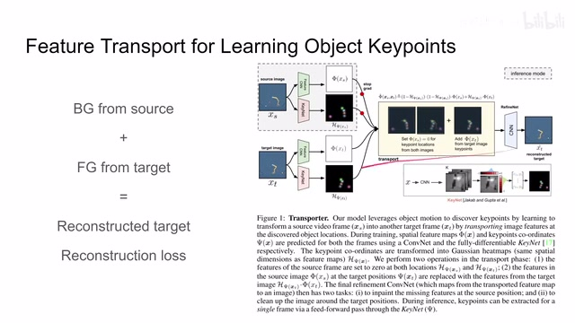
00:03:25–00:03:26 · 画面 006就可以一下子把我们整个网络给它训练起来了那么你如果想要得到好的这个 reconstruction 的这个结果就是让我们的 reconstruction 的结果更加像我们的这个 target image 那么我们的这个前景的背景的这个区分呢就必须非常精确那么这个时候有朋友就说了你的这个前景它提出来不是应该是一串串的这个 key points 一块儿这个特征点的这样的形式吗它怎么就能够帮我们重建出一个好的图像来呢那么下面呢我们继续来讲一下这个问题
00:03:26–00:03:55 · 画面 007
00:03:26–00:03:55 · 画面 007那么首先我们来看到 KeyNetKeyNet 这个概念其实是在这一篇论文里面那么它就是一个网络把我们的图像进来然后输出我们这些所有的 Key Points 它的二维的坐标假如说这里我们设置有 5 Key Points 那么首先前面先是一群 convolutional layer 跟我们上面 Feature Encoder 一样对吧最后得到的结果是一个 tensor
00:03:55–00:05:55 · 画面 008
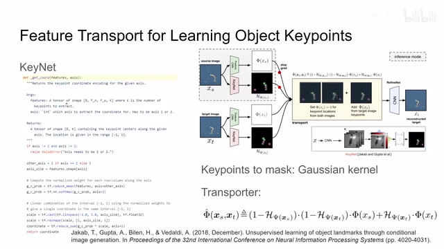
00:03:55–00:05:55 · 画面 008然后我们再做一个 1x1 的 convolution 其实就相当于我们的 feature map 上的每一个位置上的像素过一个 linear layer 最后比如说我们要解 5 个 keypoints 那么我们这个 mlp 就输出 5 个 channel 那么下面我们就在每一个 channel 里面把它的关键的点给它找出来就可以了具体怎么找呢最简单的一个方法就是我直接在整个图像里面选一个最大的值就可以了但是这种方法并不是非常的稳定。这里作者提出的是首先我要两个轴，比如说横轴和纵轴，我们要分开选它的坐标。你可以看到这里首先我们确定一下我们选哪个轴，然后存一下另一个轴，存完之后沿着另一个轴给它求和。也就是比如说我要看横坐标，我要选一个横坐标，那么首先这一列一列的我要求和，求完和之后得到一个 vector，我们做 softmax。
那么这个时候有朋友说到这一步你求一个最大值可以吗？也是可以的。但是为了更加稳定的选择的效果，这里我们把 softmax 之后的输出作为概率，然后我们试这个点的坐标为一个随机变量。假如说它图像的最左边它的坐标是-1。出现在图像的最右边呢，它的这个值呢取到 1。那么这样子呢，每一个可能的坐标值呢都跟我们一个可能的概率给它对应上。那现在呢我们取它的期望就可以得到一个相对稳定的结果。所以呢你可以看到这里它的实现首先呢是-1 到 1 的这个坐标，然后呢这里我们的概率乘上它的这个坐标的这个值，那么最后求和这样子呢就得到了这个期望。然后呢用这个期望作为我们在这个轴上。
00:05:55–00:07:51 · 画面 009
00:05:55–00:07:51 · 画面 009提出来的这个关键点的坐标。那么同理呢，我们在另一个轴上呢也可以用这种方法提出这个坐标来。那最后呢我们呢就得到了一串就是比如说这里是五个这个 S1 和 Y1 的这种点的这个组合。那么当然拿到点这个组合之后我们应该怎么样把它变成我们图像这个融合的时候能用的这个前景和背景呢？这里呢作者说直接上一个这个 Gaussian。对吧？我在这个特征点的这个坐标上我和一个高顺 kernel 进行卷积。这个 kernel 的大小呢还有这个它的 sigma 的值呢是我们固定好的。那么经过这样一个操作之后呢我们就能得到一个这样的 mask。但是注意啊，这里的它是为了这个视觉上的区分呢，它把这个不同的点做了不同的颜色。实际上它就是一个二维的 mask，它是一个灰度的图像。那么有了这个 mask 之后呢我们就可以对我们的前景背景做一个分割了。
那么应该怎么样构建我们的合成图像呢？这里呢我们来看到这个公式，也就是这个黄色的框里面作者描述的这么一个过程。那首先呢我们的 mask 呢是这个东西，一个是 source image 的 mask，一个是这个 target image 的 mask。这里呢是只有在两个 mask 都认为它是背景的像素和我们的这个 source image 的这个 feature map 它相称。那么这样子呢就保证这一块呢它只是背景。
那么另一方面是 target image 的 mask 它和 target image 相成就只拿到 target image 的前景那么把背景和前景加起来就可以得到一个合成的 target image 那么然后送到 RefineNet 里面来给它填一填空白修一修毛刺加一个 MSE 就可以把我们整个网络三个部分给它训练出来了
00:07:51–00:07:52 · 画面 010
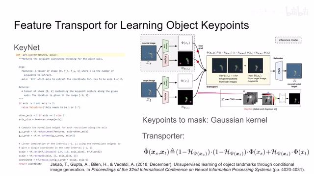
00:07:51–00:07:52 · 画面 01000:07:52–00:07:57 · 画面 011
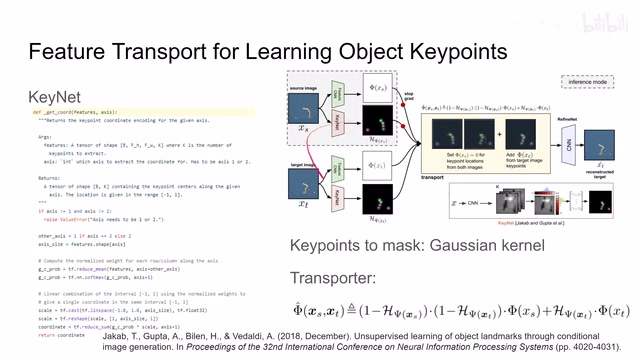
00:07:52–00:07:57 · 画面 011那么以上呢就是本文提出的这个 feature transport 如何呢用这个 keynet 还有其他的这种 reconstruction 的手段来学一个好的这个 object keypoints 这个 extractor。那么当我们完成这个训练之后呢我们其实只需要保留我们的这个 feature encoder 还有这个 keynet encoder。它们产出的结果呢一个是我们的 feature map，另一个呢就是所有的这个关键点的这个位置。那么把这些信息呢我们就可以拿到我们后面的这个网络里面。
00:07:57–00:07:59 · 画面 012
00:07:57–00:07:59 · 画面 01200:07:59–00:08:07 · 画面 013
00:07:59–00:08:07 · 画面 01300:08:07–00:08:10 · 画面 014
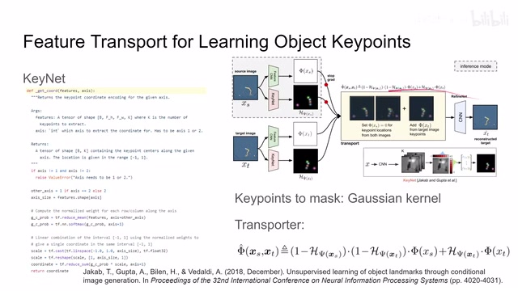
00:08:07–00:08:10 · 画面 01400:08:10–00:08:20 · 画面 015
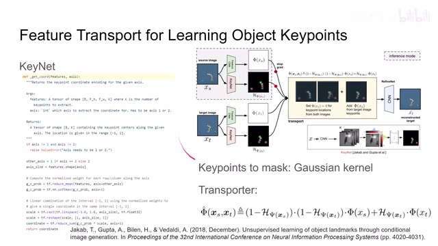
00:08:10–00:08:20 · 画面 01500:08:20–00:08:31 · 画面 016
00:08:20–00:08:31 · 画面 016做我们的这个各种的 reinforcement learning 的任务这样子呢我们的 policy learning 呢能省很多事而且呢前面呢当我们训练好这个 object keypoints 的时候呢就把前面的两个 encoder 呢给它锁住了就不用再训练了
00:08:31–00:08:32 · 画面 017
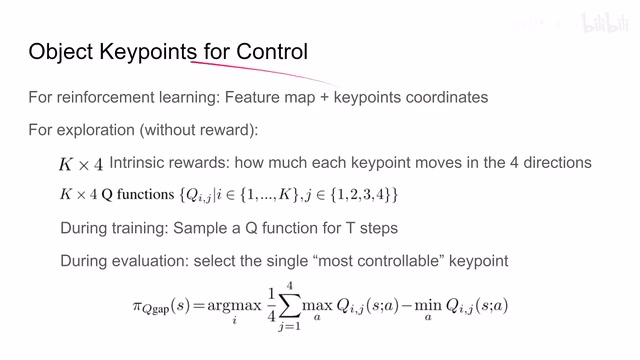
00:08:31–00:08:32 · 画面 01700:08:32–00:09:55 · 画面 018
00:08:32–00:09:55 · 画面 018那么当然除了这个 reinforcement learning 的问题啊这里呢作者还帮我们讨论了说如何利用这些 key points 来做这个 exploration 也就是探索我们的状态空间因为标记这个 reward 总是麻烦的嘛如果他能够自己去探索自己去发现不同的这个技能的话那也是很好的一个事情啊在这里呢我们来看作者是怎么样设计的假如说呢他有这个 key 这个 key points 那么呢我们就设计这个 key 乘以 4 这样的一个 intrinsic rewards那么他的定义呢就是我的一个 key points 那他向上向下向左向右向这四个方向分别移动了多少距离那么他作为这个四个 reward 那么既然有了这个 key 乘四个这样的 reward 呢那显然我们就会有 key 乘四个这个 q function 这当然也是很合理的设计对吧那么在我们训练的时候呢注意呢这里就是为了训练他自己探索一些技能啊而不是说真正的 reinforcement learning 的训练啊我们呢每次呢采样一个这个 q function
然后用它对应的 reward 去练 7 个步骤，而且采集到的这些 state transition 全部都塞到一个共用的 replay buffer 里面，那么这样我们就可以快速的完成探索任务，那么在评估的环节，我们可以找一个最容易控制的点，那么怎么定义最容易控制的点，你可以看到这里其实它的意思就是说我去找一个在 state transition 过程中它的移动幅度最大的这样一个点
00:09:55–00:09:56 · 画面 019
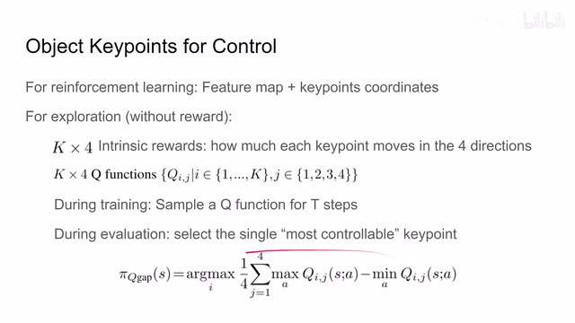
00:09:55–00:09:56 · 画面 01900:09:56–00:10:13 · 画面 020
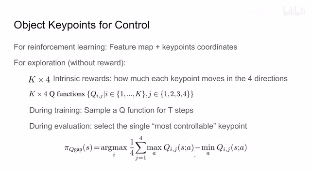
00:09:56–00:10:13 · 画面 020它的移动幅度大说明我们最好控制它这样子就能够帮助我们更有效的去探索整个状态空间是一个非常有意思的设计那么以上就是本文的主要的贡献下面我们来看作者设计的实验以及它汇报的结果首先是长期的 Keypoint Prediction 也就是它随着时间的进行每次解出来的结果是不是稳定那么它解出来的精度是怎么样的这里我们可以看到绿色的是本文的方法
00:10:13–00:10:14 · 画面 021
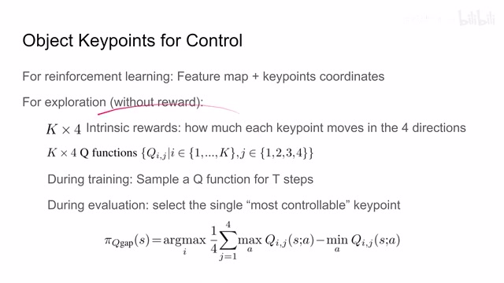
00:10:13–00:10:14 · 画面 02100:10:14–00:10:18 · 画面 022
00:10:14–00:10:18 · 画面 02200:10:18–00:10:39 · 画面 023
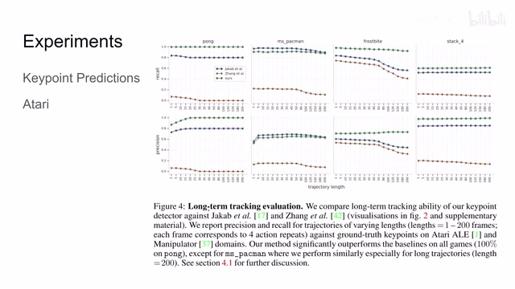
00:10:18–00:10:39 · 画面 023他的召回要害精度在大部分的情况下呢都是非常高的，也就是说，在 key point 这一块呢，我们是可以依赖他的。那么然后呢，是这个雅达利的这个 reinforcement learning 这个环境嘛，你可以看到这里呢，就是我们之前说的啊，把这个 observation state 对吧，提出这个 feature 来，然后提出这个 key points 来，然后呢，分别送到我们后续的这个 policy network 里面，这里呢，当然还有一个 lstm 呢，那么最后呢，出这个 action
00:10:39–00:11:15 · 画面 024
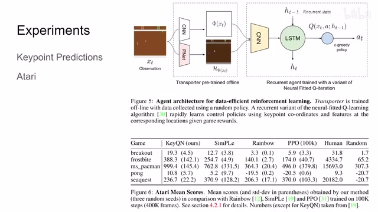
00:10:39–00:11:15 · 画面 024可以看到呢，本文的方法呢，比其他的方法呢都要好一些，那么此外呢，作者还汇报了一些在没有轮播的时候的这个探索问题，那感谢你的朋友呢可以在原文还有他的附录中查看，以上就是我对这篇论文的一个简单的分析，感谢你的收看，再见
00:11:15–00:11:16 · 画面 025
00:11:15–00:11:16 · 画面 025转写与来源说明 · 0 个自动复核提示
保留 26 个原始语音片段，0 个片段触发自动复核提示。提示仅用于定位可能的术语、重复或识别问题，不等于已确认错误。
讲解画面为源视频截图（640×360），不是可编辑 PPT 文件。全片按每秒 2 帧扫描内容变化，逐步展开页保留；连续动画保留代表画面。清晰度受源视频限制。
原视频：paper/合集_2026-10-16_表征学习/[论文简析]Unsupervised Learning of Object Keypoints for Perception..[1906.11883].mp4
SHA-256：4cdebcd5191ea58e503971138fb3bd00a2fed415080a442f8954028425889057
全文按视频语音与画面制作。原论文可从上方链接下载；完整资料包保留全文、原始逐字稿、字幕和校对记录。